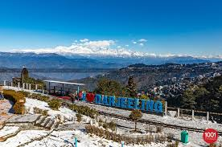
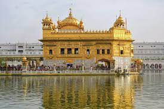

-

Manali
Manali is a popular tourist destination in India and serves as the gateway to the Lahaul and Spiti district as well as the city of Leh in Ladakh.
-

Ooty
Ooty is a town and municipality in the Nilgiris district of the Indian state of Tamil Nadu. It is located 86 km (53 mi) north west of Coimbatore, and is the headquarters of Nilgiris district. Situated in the Nilgiri hills, it is known by the epithet "Queen of Hill Stations", and is a popular tourist destination.
-
Goa
Goa is a state on the southwestern coast of India within the Konkan region, geographically separated from the Deccan highlands by the Western Ghats.
-
Ladakh
üèçÔ∏èCruising through Ladakh's rugged terrain on two wheels, feeling the wind whispering secrets of the mountains.üèîÔ∏è#BikeAdventures #LadakhExpedition"
-

Gokarna
Gokarna is a small temple town located in the Uttara Kannada district of Karnataka state in southern India,main temple, Mahabaleshwara, is dedicated to Shiva.
-
Coorg
Coorg, officially known as Kodagu, is the most affluent hill station in Karnataka. It is well known for its breathtakingly exotic scenery and lush greenery. Forest covered hills, spice and coffee plantations only add to the landscape
-
Chikmagalur
Chikmagalur is a town in the Chikmagalur District in the Indian state of Karnataka. It is conveniently close to the state's hilly wetlands in the Malnad Area.
-

Darjeeling
Darjeeling,fondly known as the 'Queen of Hills', is a charming hill station nestled in the Indian state of west bengal . Famous for its aromatic tea gardens, panoramic views, and colonial architecture, Darjeeling India is a paradise for nature lovers and history enthusiasts alike.
-

Taj Mahal
Taj Mahal, mausoleum complex in Agra, western Uttar Pradesh state, northern India. The Taj Mahal was built by the Mughal emperor Shah Jahān (reigned 1628–58) to immortalize his wife Mumtaz Mahal
-

Golden Temple
The Golden Temple India(Sri Darbar Sahib Amritsar) a symbol of human brotherhood and equality. Everybody, irrespective of cast, creed or race can seek spiritual solace and religious fulfilment without any hindrance. It also represents the distinct identity, glory and heritage
-
Ramoji Film City
Ramoji Film City is an integrated film studio facility located in Abdullahpurmet, Hyderabad, India. Spread over 1,666 acres, it is the largest film studio complex in the world and as such has been certified by the Guinness World Records. It was established by Telugu media tycoon Ramoji Rao in 1996
-
Jog Falls
Jog Falls is one of the highest waterfalls in India. During monsoons, one can see a breathtaking view of the falls with rainbows coming every now and then.